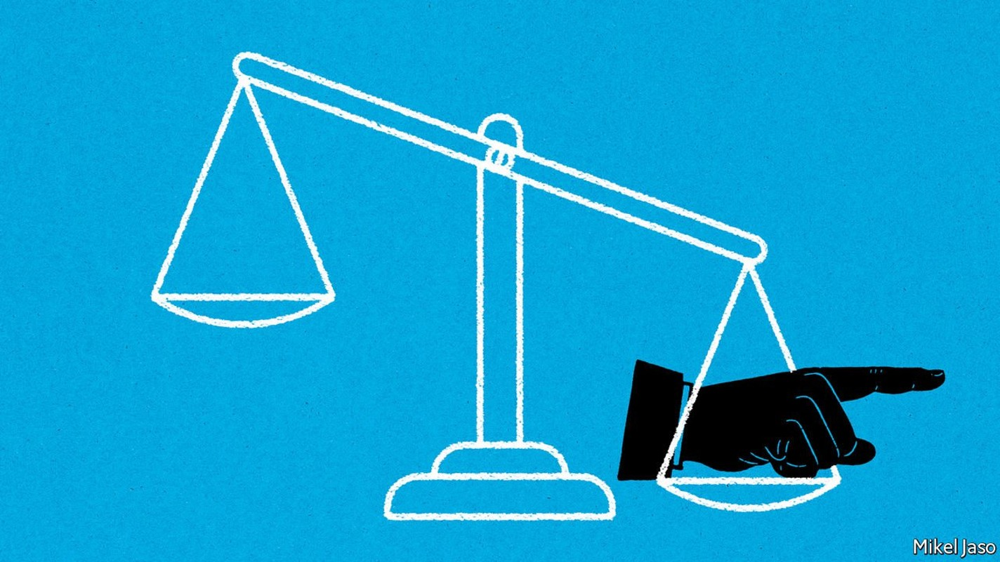
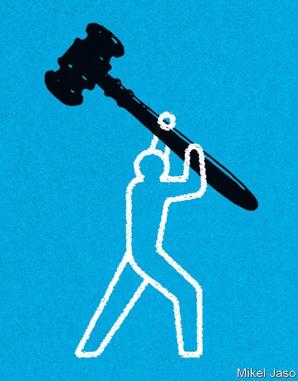
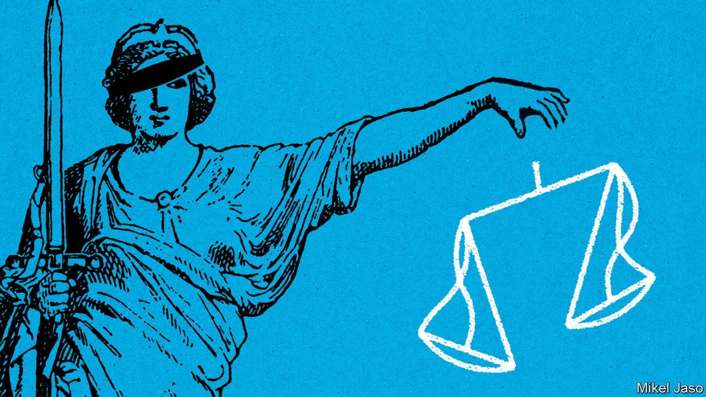

America’s Supreme Court faces a crisis of legitimacy
The nine justices are increasingly at odds with the majority of citizens

BIG NEWS from America’s Supreme Court usually arrives in late June, when the most contentious rulings of the year are released. But on May 2nd a legal bombshell was delivered two months early, and in unprecedented fashion. Politico, a news website, published a leaked draft of an opinion overruling Roe v Wade, the precedent that has enshrined a constitutional right to abortion for nearly 50 years. The draft, which the chief justice, John Roberts, later confirmed was genuine, appeared to have the support of five of the nine justices, enough to make it the law of the land. If that majority holds when the ruling is officially released, states would be free to ban abortion altogether. Thirteen have already done so, pending just such a ruling.
Listen to this story.Enjoy more audio and podcasts on iOS or Android.
Listen to this story
Save time by listening to our audio articles as you multitask
It is not clear who leaked the draft or why. Justices can change their votes up until the moment a ruling is made public, so Roe is not necessarily doomed. What is certain is that a reversal of Roe would invite howling from the left and exultation from the right. Although many jurists consider Roe’s reasoning flawed, voiding it would still be a shocking step, in that it would run counter to public opinion and lead to the prohibition in many states of a procedure that almost a quarter of American women seek at some point in their lives—all for no more pressing reason than because the composition of the court has changed.
And abortion is by no means the only controversial topic the justices have taken up. They are also about to release decisions on gun rights, the federal government’s regulatory powers and the separation of church and state. Next year affirmative action will be under review. If they shift American law to the right in all these areas, growing numbers of Democrats are bound to denounce them as unelected, unrepresentative and illegitimate cat’s paws of the right. The court risks being seen as just another manifestation of America’s extreme partisanship, and treated accordingly. Should its authority be undermined in this way, it is not much of a stretch to imagine a Democratic governor, say, refusing to enforce an order of the court—or a Democratic candidate refusing to accept its judgment in an election dispute.
Nine berobed judges striking down laws approved by elected politicians poses a “countermajoritarian difficulty”, wrote Alexander Bickel, a legal theorist, in 1971, after the court under Chief Justice Earl Warren had expanded judicial power in the 1950s and 1960s. But Robert Dahl, a political scientist, believed any gulf between popular opinion and the positions of the Supreme Court was bound to be bridged relatively quickly. “The policy views dominant on the court,” Dahl wrote in 1957, “are never for long out of line with the policy views dominant among the lawmaking majorities of the United States” as presidents “can expect to appoint about two new justices during one term of office”. This might not be enough to rebalance a listing court in four years, but presidents are “almost certain to succeed in two terms”.
Terms of entrenchment
Recent decades suggest this confidence was misplaced. For 25 years the pace of appointments was half of what Mr Dahl thought normal. Bill Clinton, George W. Bush and Barack Obama all averaged only one per term. When Antonin Scalia, a conservative, died in 2016, it briefly looked as though Mr Obama would be able to move the court to the left. But within hours of Scalia’s death, Mitch McConnell, the leader of the Republicans in the Senate, placed a blockade on the seat and refused to allow a vote on Merrick Garland, Mr Obama’s pick. Donald Trump went on to fill the seat when he became president almost a year later, and then to appoint two more justices, making him the first president since Ronald Reagan to name three in one term.
Mr Trump’s third pick upended a 50-year balancing act. Since the 1970s a series of swing justices had kept the Supreme Court from tilting too far from the political centre. Although all of them had been appointed by Republican presidents, each one acted as a pivot, with four liberal justices to the left and four conservatives to the right. In 2020, however, with the death of Justice Ruth Bader Ginsburg and her swift replacement by Amy Coney Barrett, the court’s equilibrium vanished.
There are now six solidly conservative justices, all appointed by Republican presidents, and only three liberals, all seated by Democrats. Chief Justice Roberts, the last median jurist of the five-decade balancing act, can no longer curb the conservative majority. The threatened reversal of Roe, in other words, may portend a string of highly charged, polarising rulings.
There is no quick way for Democrats to remedy this, since the constitution allows justices to serve “during good behaviour”, meaning as long as they like, provided they are not impeached. Nearly half die in office. The oldest of the justices appointed by Mr Trump is just 57; all three could easily remain in robes for another 30 years.
But that tight grip may come at the cost of the Supreme Court’s reputation. The Roberts court has moved the law steadily to the right on race, voting rights, campaign finance, religious liberty, labour unions and the right to bear arms. When he dissented from a ruling in 2007 that halted efforts to ensure public schools were racially mixed, Justice Stephen Breyer lamented the ground shifting beneath his feet: “It’s not often in the law that so few have so quickly changed so much.”
When Justice Breyer delivered those words, the Supreme Court enjoyed the approval of 60% of Americans. Fifteen years on, that figure has fallen to about 40%. The explosive cases currently before the court are likely to drag it down further. The justices are weighing a challenge to laws in New York that make it difficult to carry guns outside the home. A case regarding the regulation of power plants under the Clean Air Act gives them an opportunity to hamstring federal agencies. And two cases could begin to demolish the wall between church and state: a public-school football coach’s plea to lead student athletes in prayer and a challenge from parents in Maine who say their state’s tuition-assistance programme must include money for religious schooling.
The most contentious of all is Dobbs v Jackson Women’s Health Organisation, the case that could see Roe v Wade overturned. The government of the state of Mississippi had at first asked the justices to uphold a ban on abortions more than 15 weeks into a pregnancy, even though prior rulings had stated that abortion should be legal at least until the fetus is able to survive outside the womb (about 24 weeks). But once Justice Barrett joined the court, the state was emboldened to sharpen its request. The constitution does not protect a right to abortion at all, Mississippi’s lawyers told the justices: Roe was “egregiously wrong” and should be overruled.
That is not what most Americans think. By roughly 2-to-1, they oppose letting states ban abortion outright, according to pollsters. Last year fully 80% told Gallup, a polling firm, that abortion should be legal in some or all circumstances; only 19% wanted it to be completely banned. These views have changed little since the 1970s.
A gavelling storm
Overturning Roe would also involve departing from a well-trodden precedent—something the court does relatively seldom. In its hearings on Dobbs, Justice Sonia Sotomayor predicted that scrapping Roe would bring it into disrepute. “Will this institution”, she asked, “survive the stench that this creates in the public perception that the constitution and its reading are just political acts?”

In April Justice Elena Kagan posed similar questions in a case concerning the requirement that police inform those they arrest of their rights. She noted that years ago Chief Justice William Rehnquist, while no fan of the ruling that gave rise to the requirement, nonetheless saw it as deeply ingrained in the justice system and “central to people’s understanding of the law”. For him, she continued, if the court “overturned it or undermined it or denigrated it”, the result would be “a kind of unsettling effect not only on people’s understanding of the criminal justice system” but of the “court itself” and its “legitimacy”.
Chief Justice Roberts is an institutionalist who tends to honour stare decisis, the idea that the court should normally “let stand the decision” made in previous rulings. In 2020 he joined the court’s liberal wing in striking down onerous regulations on abortion clinics. Although he disagreed with the precedent the case was based on, he wrote, without “special circumstances”, stare decisis requires the justices to abide by their precedents. Justice Clarence Thomas, by contrast, has argued that, when a previous ruling is “demonstrably erroneous”, the court “should correct the error”. The leaked opinion pooh-poohs factors that might typically weigh in a precedent’s favour, including its age, how practical a standard it sets and the extent to which Americans have come to rely on it.
Reversing Roe would also amplify charges of partisanship, which the justices dislike, whatever their devotion to precedent. Last year, at a centre named for Mr McConnell, Justice Barrett insisted that she and her fellow justices were not “a bunch of partisan hacks”. In April, at the Reagan Library, she argued that people would not see justices as politicians in robes if they would only “read the opinions”.
Yet the court is taking more decisions without laying out its reasoning, another habit that has elicited complaints from the left. Two days after Justice Barrett’s appearance, for instance, it revived a Trump-administration rule that had limited states’ power to protect rivers from pollution under the Clean Water Act, in a 5-4 decision released without any written opinion. What is more, Louisiana v American Rivers had arrived at the court on its emergency or “shadow” docket—a shortcut supposedly reserved for urgent matters.
The shadow docket has become a back door through which growing numbers of important decisions are slipped with limited airing and little or no explanation. Its expansion reflects in part the Trump administration’s filing of 41 emergency applications in four years, compared with a total of just eight during the previous four presidential terms. But the justices have also been more indulgent of petitions of dubious urgency, if inconsistently so. Since their current annual session began in October, the justices have taken up 13 emergency cases on subjects as fraught as electoral redistricting and vaccine mandates.
Since Justice Barrett joined the bench, Chief Justice Roberts has publicly joined the court’s three liberals in dissent seven times in shadow-docket orders. But American Rivers was notable: it marked the first time he signed one of the liberal justices’ dissenting opinions and joined in criticism of the court’s tendency to step into legal disputes prematurely. In her dissent, Justice Kagan noted that the applicants had not shown “exceptional need for immediate relief”. To grant their wish anyway “renders the court’s emergency docket not for emergencies at all”.
In September a shadow-docket request to block a law in Texas that banned abortions after six weeks of pregnancy met a different fate. Over dissenting votes from the three liberal justices and the chief, the conservative majority allowed the ban to take effect, all but erasing access to abortion for Texas’s 7m women despite the precedent set by Roe. Justice Kagan argued the move was “unreasoned, inconsistent and impossible to defend”. Steve Vladeck of the University of Texas argues that by accepting some emergency applications and refusing others with little rhyme or reason, the justices “open themselves up to charges that they are engaged in political, rather than judicial, behaviour”.
The court’s decision to let the Texan law stand also raised eyebrows because it was designed expressly to thwart Roe, and thus the court’s own authority. The law barred Texan officials from enforcing the ban on abortions, thus shielding them from legal challenges. But it empowered private individuals to sue anyone who helps a woman get an abortion. Those found guilty of doing so are to be fined $10,000, which would be passed as a bounty to the plaintiff. The court saw nothing wrong with this mechanism, even though it could be used to undermine all manner of its rulings.
Deal with it
This is not the first time the Supreme Court has been accused of ideological bias. The biggest crisis came during the 1930s, when policy after policy of Franklin Roosevelt’s New Deal hit a judicial roadblock. In 1937 the exasperated president pledged to “take action to save the constitution from the court and the court from itself”. He announced a plan to add six seats to the court to create a new, more pliable majority. But he did not go through with it, after one of the justices changed his mind and upheld a contested law on minimum wages.
The “switch in time that saved nine” ended the feud with the president and Congress and heralded greater openness to Roosevelt’s economic reforms, which he cemented with seven appointments to the court between 1937 and 1943. That, in turn, paved the way for the most liberal period in the court’s history, in the 1950s and 1960s, which prompted Republican complaints of “judicial activism” and calls for the impeachment of the chief justice.

Forty years later came another crisis, when the court voted along partisan lines to end vote-counting in Florida and install George W. Bush as president. But Al Gore accepted the result with paeans to the rule of law and peaceful transitions of power. The court’s standing in opinion polls fell sharply, but recovered within about a year.
The court’s reputation does not seem so resilient these days. Three recent studies by two political scientists, Logan Strother and Shana Gadarian, suggest that decisions people do not like “substantially, significantly and durably affect [their] assessment of the court’s nature and its legitimacy”. When liberals were asked about conservative rulings in prominent cases, and vice versa, they tended to view disagreeable decisions as “political”. The more political the court seemed to them, in turn, the less legitimate they considered it.
Yet for all the misgivings about the court on the left, few Democratic politicians have any appetite to do anything about it. President Joe Biden appointed a commission last year to study reforms to the court. But its report is gathering dust. Congress seems uninterested in such ideas as limiting the court’s jurisdiction or trimming justices’ life terms, much less expanding the number of seats on the court.
One measure with better prospects is an ethics bill. Unlike their colleagues in lower courts, Supreme Court justices are not subject to any formal code of conduct. It had simply been assumed that the justices’ professionalism was unquestionable. Yet many Democrats have found reason to question Justice Thomas for failing to step back from cases regarding the efforts by Mr Trump to overturn the results of the election of 2020, which culminated in a rally-turned-riot that overran the Capitol on January 6th 2021. Justice Thomas’s wife, Ginni, a conservative activist, had not only attended the rally but had also implored Mark Meadows, Mr Trump’s chief of staff, to keep looking for ways to undo Mr Trump’s defeat. In February Justice Thomas was the only member of the court to support Mr Trump’s bid to prevent a committee investigating the events of January 6th from obtaining presidential records.
The Supreme Court lacks an army; it relies on others to give life to its decisions. So far, whenever the court’s legitimacy has been questioned, its authority has held. Yet the justices would surely like their judgments to inspire more than acquiescence. And it does not seem implausible that grudging acceptance might at some point devolve into defiance.
What, for instance, if a liberal state such as California or Massachusetts followed Texas’s example and enacted a law intended to get around the Supreme Court’s permissive view of gun rights? If the conservative justices were inconsistent and voided such a law, an outraged Democratic governor might ignore them, spurring a constitutional crisis. Laurence Tribe of Harvard Law School, for one, believes the prospect of government officials “thumbing their noses at the court’s formal judgments” is not “an altogether far-fetched scenario”.
An even more worrisome possibility is another contested presidential election. A near-majority of the court has shown interest in the idea that state legislators are the ultimate arbiters of election results in their states. In 2020 Mr Trump urged officials in states that had voted for Mr Biden but had legislatures controlled by Republicans to find fault with the count in some way. Although none did so, and the courts knocked back the many flimsy lawsuits filed on Mr Trump’s behalf, four justices have given the impression that they would not necessarily overrule a legislature that took it on itself to decide an election.
Justice Robert Jackson saw the court’s powers as bound up in the public’s perception of its legitimacy. “We are not final because we are infallible,” he said; “we are infallible only because we are final.” If politicians and voters begin to reject the Supreme Court’s authority as the final arbiter of the law, chaos beckons. ■